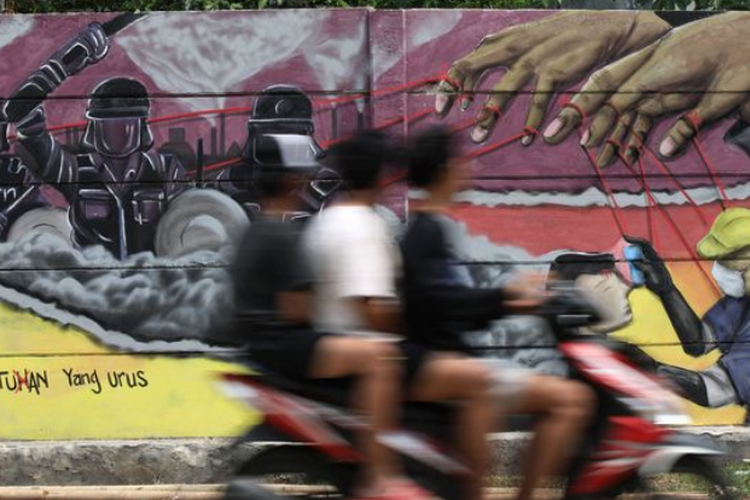

Peristiwa Penting dan Isu Terkini tentang Demokrasi
Negara Indonesia adalah negara berdemokrasi yang berdasarkan pancasila. Tentunya Indonesia tidak terlepas dari masalah-masalah yang ada. Namun, masalah-masalah yang harus dihadapi oleh seluruh rakyat untuk dapat terus memperkuat dan memajukan sistem demokrasi dalam bernegara.
|
 |
Pemilu 2024 Sebagai Momentum Konsolidasi Demokrasi Konsolidasi demokrasi merupakan bagian penting dari upaya mewujudkan Indonesia yang demokratis. Proses ini dimulai sejak tahap inisiasi demokrasi pada 1999 dan terus berlangsung hingga sekarang. Meskipun terdapat ancaman, gangguan, hambatan, dan tantangan dalam proses tersebut, berbagai upaya demokratisasi telah dilakukan oleh berbagai elemen bangsa, termasuk pemerintah, legislatif, yudikatif, dan masyarakat pro-demokrasi. Tahap demokrasi melibatkan serangkaian peristiwa, termasuk Pemilu 1999 sebagai tahap inisiasi dan Pilpres 2004 sebagai tahap instalasi. Pemilu dianggap sebagai elemen kunci dalam demokratisasi, memainkan peran sebagai alat sirkulasi elit, medium aktualisasi hak politik warga negara, dan instrumen bagi penguatan demokrasi secara struktural dan kelembagaan. Tantangan dalam konsolidasi demokrasi muncul pada tahap konsolidasi, yang diproyeksikan berlangsung hingga 2029. Kompleksitas muncul sebagai konsekuensi dinamika politik, ekonomi, dan sosial budaya masyarakat. Untuk mencapai konsolidasi demokrasi, diperlukan komitmen, konsistensi, dan kesinambungan proses dari seluruh aktor politik. Beberapa permasalahan utama termasuk budaya politik, regulasi, kapasitas kelembagaan, dan adaptasi teknologi. Pemilu 2024 diharapkan menjadi momentum untuk memperkuat konsolidasi demokrasi. Meskipun terdapat peluang-peluang untuk penguatan, juga perlu mencermati ancaman-ancaman seperti isu ambang batas pencalonan presiden, rezim keserentakan, dan isu proporsional tertutup dan terbuka. Keputusan dalam Pemilu harus mempertimbangkan konstitusi dan prinsip-prinsip demokrasi, dengan harapan bahwa Pemilu 2024 akan menjadi langkah penting menuju demokrasi yang lebih matang dan paripurna sesuai amanat reformasi. |